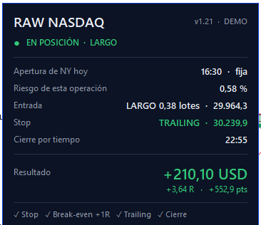

En real · dentro de nico66fx PRO
RAW NASDAQ
El robot del NASDAQ 100 para MetaTrader 5. Una decisión al día en la apertura de Nueva York, con su stop desde el primer segundo.
+228,6 %
10.000 → 32.858 USD
backtest 2015–2026
- 3.021operaciones
- 1,20profit factor
- 14,36 %caída máxima
El robot, el manual y los presets están dentro de la comunidad.
Qué hace
Una regla, siempre igual
- NASDAQ 100 en M5, para MetaTrader 5. El símbolo cambia según el bróker: NAS100, US100, USTEC…
- Una decisión al día. Al cerrar la primera vela de 5 minutos de Nueva York compara el cierre con su media: por encima entra largo, por debajo corto y, si empatan, no opera.
- Stop desde el primer segundo, calculado con la volatilidad (ATR). Break-even a +1R y trailing con una media lenta desde +0,5R.
- Cierra solo: a las 6 h 25 min de abrir o 5 minutos antes del cierre del mercado.
- Sin martingala, sin grid, sin promediar. Una sola posición a la vez.
- Riesgo del 0,50 % por operación, ajustado a la volatilidad entre la mitad y el doble, con un tope duro del 1 %. Si el lote mínimo de tu bróker no cabe, no opera.
- Hora automática: calcula cada día la apertura de Nueva York en la hora de tu bróker, también en las semanas del cambio de horario.
En tu MetaTrader
Lo instalas y te dice qué va a hacer hoy
El panel te enseña a qué hora operará, si la apertura de Nueva York cuadra con tu bróker, el estado de la posición y si tu cuenta alcanza para el lote mínimo.
Lo que tienes en PRO
- El robot RAW NASDAQ para MetaTrader 5.
- El manual completo y la guía rápida.
- Dos presets: estándar (0,50 %) y prudente (0,25 %).
- Soporte y actualizaciones en la comunidad.

Antes de activarlo
Lo que hay que saber aguantar
Es una ventaja estrecha: gana porque acierta un poco más de lo que falla y deja correr las buenas. Empieza en demo y pasa a real con el preset prudente.
- La peor racha del backtest fue de 9 pérdidas seguidas.
- 51 de los 141 meses cerraron en negativo.
- El periodo más largo sin nuevos máximos duró unos 30 meses, de junio de 2022 a diciembre de 2024.
- Las cifras son de backtest. Todavía no hay historial real verificado de esta versión.
RAW NASDAQ está dentro de nico66fx PRO
El robot, el manual y los presets, junto al resto de bots, los cursos y la comunidad.
Resultados pasados no garantizan resultados futuros. Las cifras de esta página son de un backtest con datos históricos. Este contenido no es asesoramiento financiero. Operar con apalancamiento conlleva un riesgo elevado de pérdida de capital.